Création paysagère, maçonnerie, aménagement extérieur : chaque jardin raconte une histoire unique. Voici quelques chantiers menés avec passion sur le Bassin d'Arcachon et ses environs.
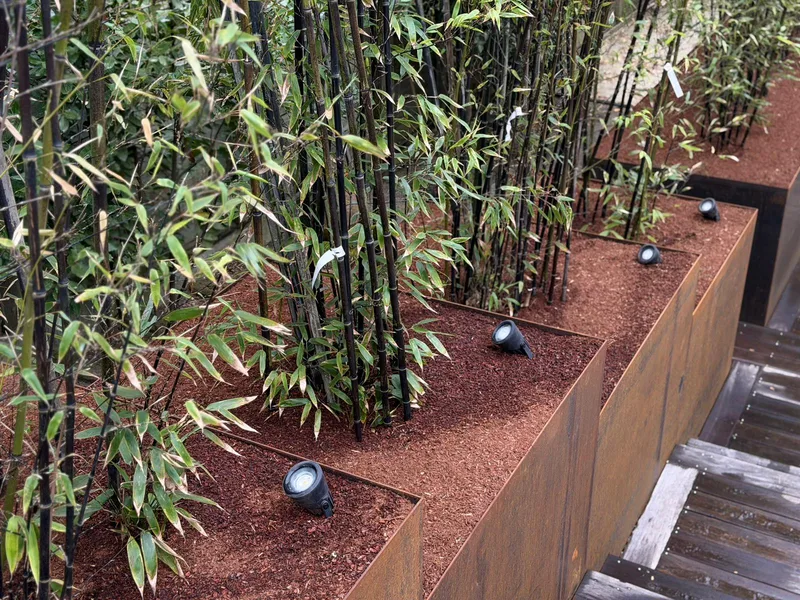
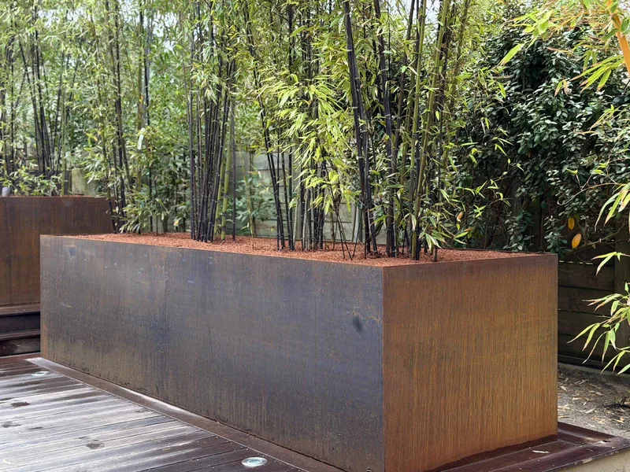
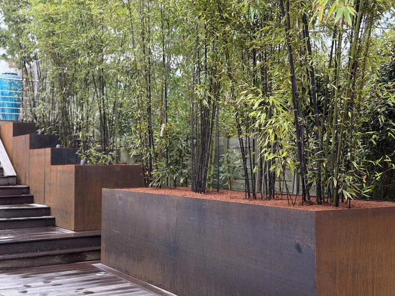
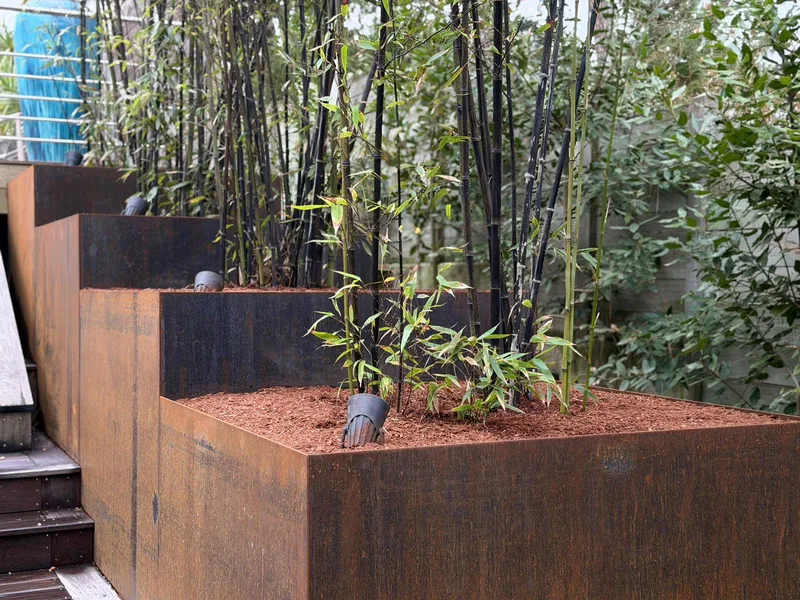
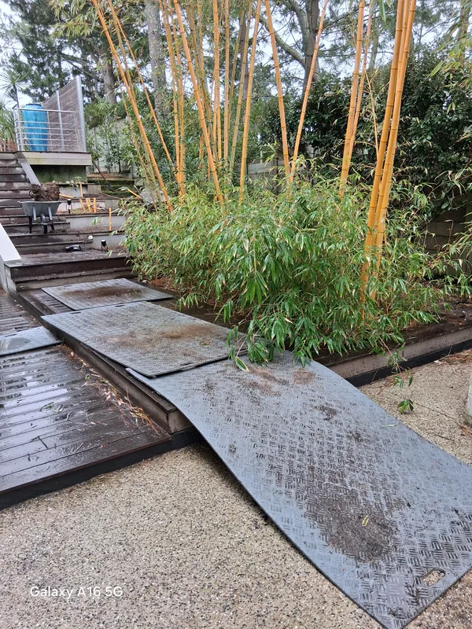
Conception et réalisation de bacs de plantation en acier corten, posés en escalier sur un dénivelé en bord de piscine. Plantés de bambous noirs (Phyllostachys nigra) sur paillage rouille assorti, et mis en valeur par un éclairage LED encastré. Une intégration design qui fait dialoguer le métal patiné, le bois de la terrasse et la lumière des spots.
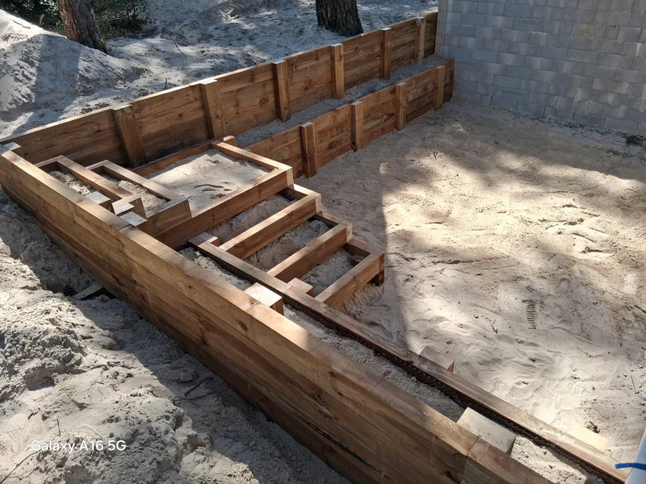
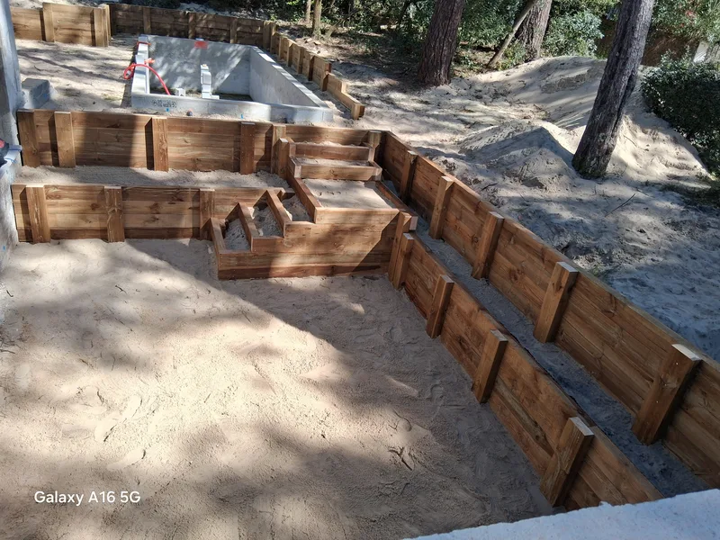
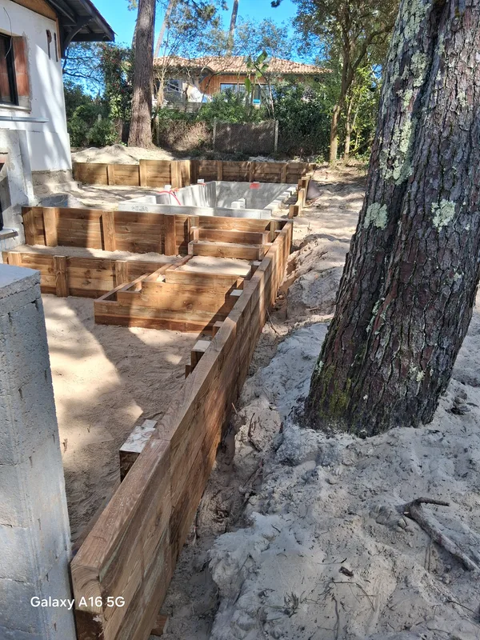
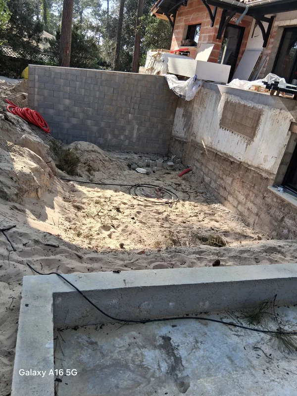
Construction d'une terrasse en madriers de pin classe 4 et d'un escalier intégré en traverses paysagères, le long d'un bassin et au pied d'un grand pin maritime. Un chantier d'intégration paysagère mené dans le respect de la flore landaise et du sol sableux : aucune coupe d'arbre, traverses fixées sans dalle béton, drainage naturel préservé.
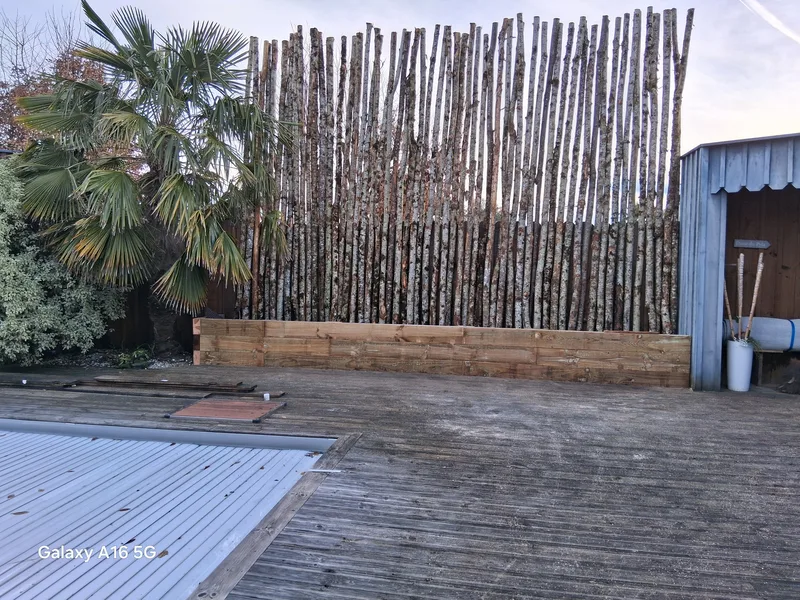
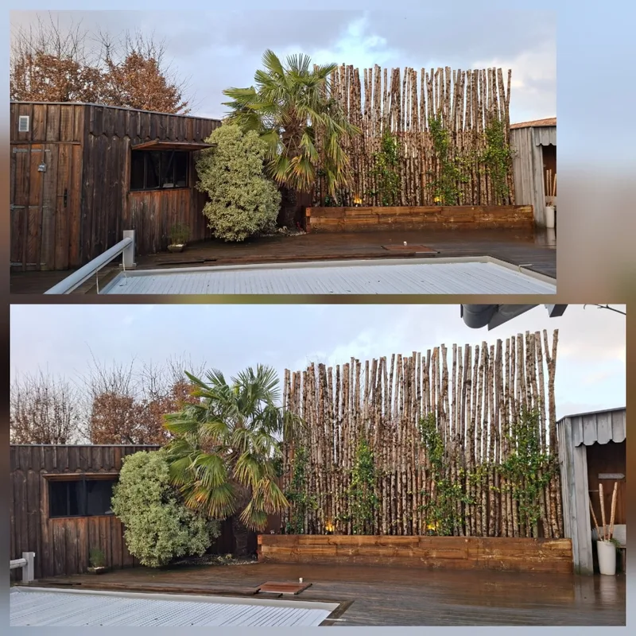
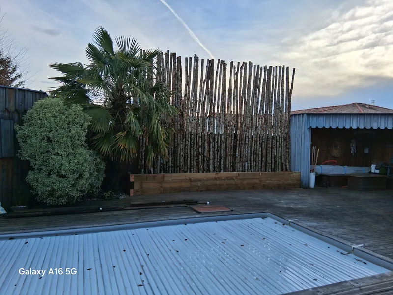
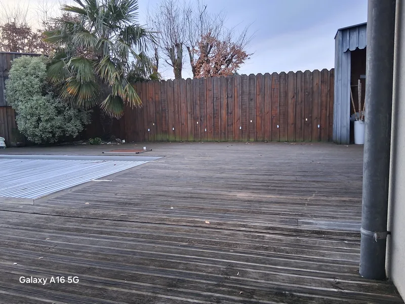
Transformation d'une palissade existante par un habillage en rondins de châtaignier non écorcé, posés verticalement sur un bac de plantation neuf en pin traité. Plantation de lierre grimpant pour végétaliser progressivement la clôture. Un changement de style radical, du bois lasuré sombre au naturel brut, sans démolir l'existant.
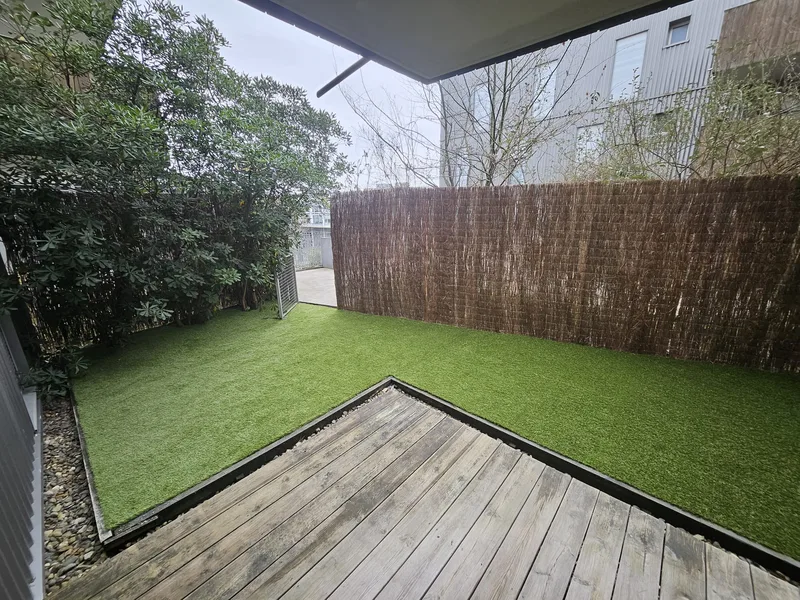
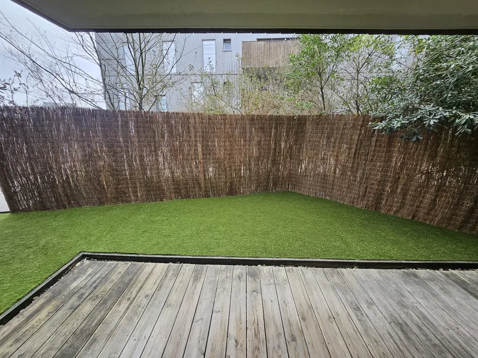
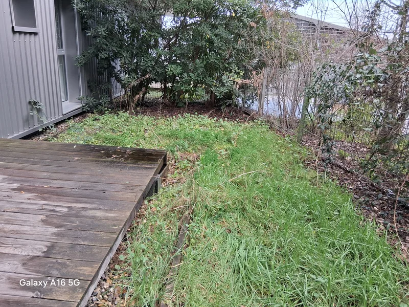
Transformation d'espaces extérieurs (cours intérieures, copropriétés, petits jardins urbains) avec pose de gazon synthétique haute densité et brise-vue en bruyère ou branchage. Idéal pour les espaces difficiles d'accès, peu ensoleillés ou pour ceux qui veulent un extérieur impeccable sans tonte ni arrosage. Solution durable, propre toute l'année.
Devis gratuit, sans engagement. Cédric Mandin se déplace chez vous sur le Bassin d'Arcachon pour étudier votre projet.
lespaysagesdemandin@gmail.com